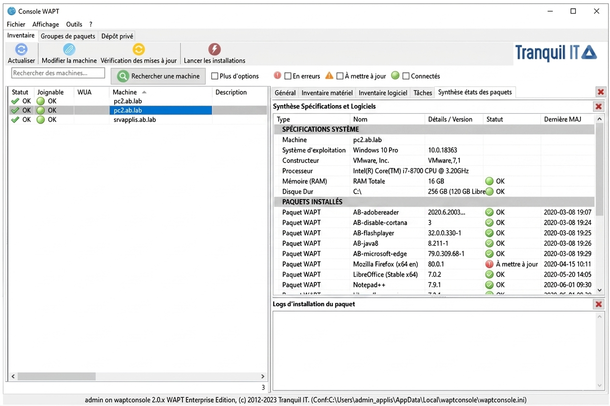
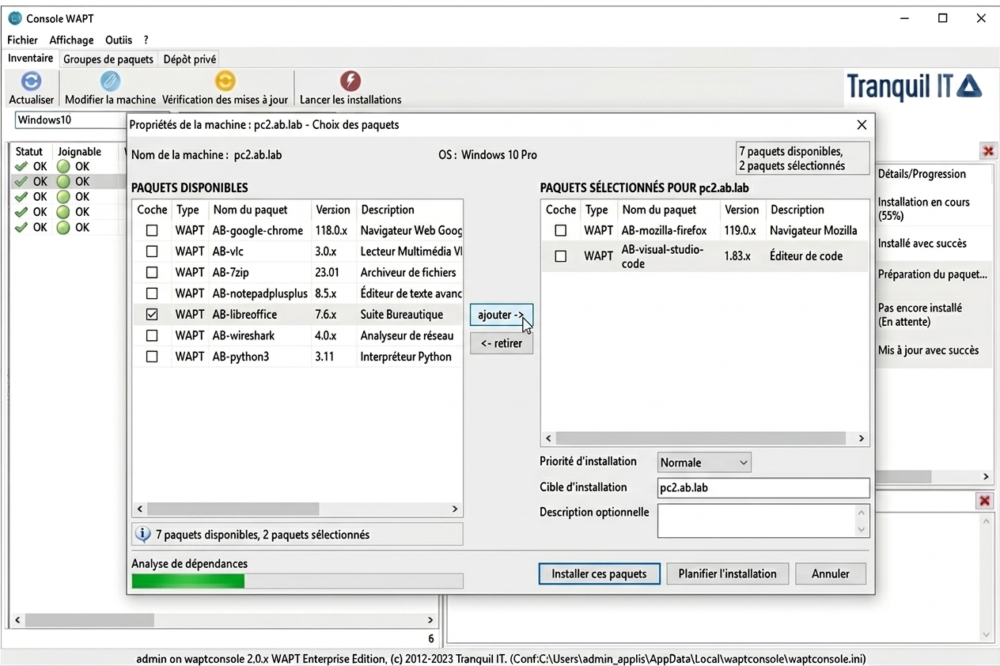
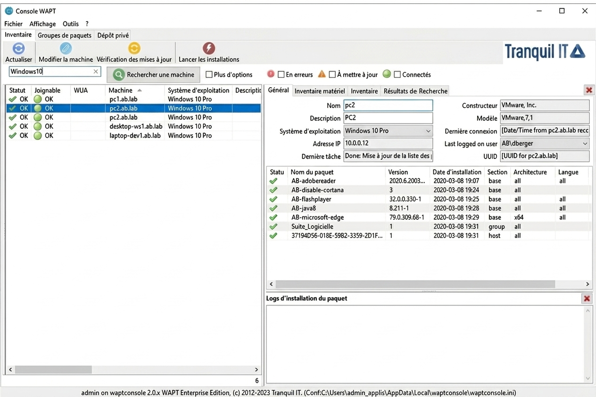
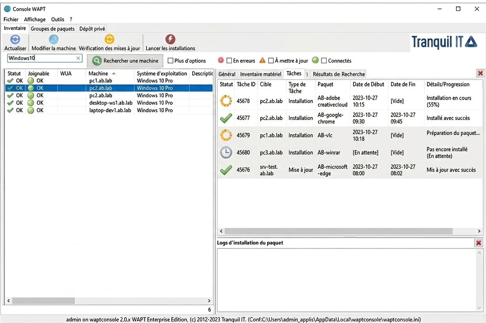

Situation : WAPT est l'outil central du service support de la CPAM 13. Il permet à notre équipe de 7 techniciens de gérer, maintenir et superviser l'ensemble du parc sur 10+ sites sans se déplacer pour chaque intervention. Il repose sur une architecture client-serveur : un serveur WAPT central, un agent installé sur chaque poste, et une console depuis laquelle le technicien pilote tout.
Partie 1- Les 4 usages quotidiens de WAPT
1
L'inventaire : connaître le parc en temps réel
WAPT remonte automatiquement pour chaque poste : version Windows, RAM, CPU, logiciels installés, adresse IP et statut de connexion. C'est la première chose que je consulte avant toute intervention- ça évite de se déplacer pour des informations que la console affiche en quelques secondes.

Console WAPT- vue inventaire avec spécifications système et paquets installés
2
La prise en main à distance
WAPT permet deux types de prise en main à distance selon la situation. C'est l'une des fonctionnalités les plus utilisées au quotidien pour résoudre les incidents sans déplacement.
| 🔵 SSH | 🟡 RDP | |
|---|---|---|
| Fréquence | Cas le plus fréquent | Rare |
| Confirmation agent | ✓ Obligatoire L'agent accepte via une notification |
✗ Non requise |
| Ce qu'on voit | Le bureau de l'agent, sur sa propre session | Mon bureau sur ma session |
| Différence clé | L'agent voit ce qu'on fait et reste présent | L'agent est déconnecté, on prend sa session à sa place |
| Utilisation | Support courant, incidents du quotidien avec l'agent | Cas rares nécessitant d'agir sans présence de l'agent |
Comparatif SSH / RDP dans WAPT
3
Le déploiement de logiciels
Les logiciels sont disponibles sous forme de paquets WAPT sur le serveur. Je sélectionne un ou plusieurs postes et je lance le déploiement. L'installation s'effectue silencieusement en arrière-plan sans interruption pour l'utilisateur. Si une mise à jour échoue à cause d'un conflit de version, je désinstalle manuellement l'ancienne version via prise en main à distance, puis je redéploie le paquet propre.

Console WAPT- liste des paquets logiciels déployés sur un poste
4
Filtrage et ciblage du parc
Les filtres de la console permettent de cibler des postes selon des critères précis : version Windows, logiciel manquant, poste hors ligne, mise à jour en attente... C'est la base de toute intervention planifiée. Avant une tournée ou un déploiement, je filtre d'abord pour savoir exactement quels postes sont concernés.

Console WAPT- filtrage des postes par critères
Partie 2- Procédure : prise en main à distance (SSH)
5
Vérifier que le poste est joignable
Avant toute prise en main, je vérifie le statut du poste dans la console WAPT. Un poste connecté affiche une pastille verte- la prise en main est possible. Un poste hors ligne affiche une pastille rouge- impossible d'intervenir à distance, un déplacement physique sera nécessaire ou contacter l'agent pour qu'il puisse se connecter sur son poste
Statut de connexion dans la console WAPT
6
Contacter l'agent et obtenir l'accord
Je contacte l'agent par téléphone ou Zoom pour l'informer de la prise en main imminente. Une notification apparaît sur son écran et il doit l'accepter explicitement. Sans cet accord, aucune prise en main SSH n'est possible
Processus d'accord avant prise en main SSH
7
Intervenir et résoudre l'incident
Une fois connecté, je vois le bureau de l'agent sur sa session et j'interviens comme si j'étais physiquement devant le poste. Exemples d'actions possibles depuis la session distante :

Console WAPT- suivi des tâches et interventions à distance
Actions possibles depuis une session de prise en main WAPT
8
Clôturer la session et tracer dans GLPI
Une fois l'incident résolu, je ferme la session de prise en main et je rédige un compte-rendu détaillé dans le ticket GLPI. Il doit préciser le nom du poste, l'action réalisée et le résultat. Un compte-rendu complet permet à n'importe quel technicien de l'équipe de reprendre l'historique si l'incident se reproduit.
Processus de clôture d'un ticket après prise en main
Partie 3- Sécurité & RGPD
9
Les règles impératives à respecter
La CPAM traite des données de santé sensibles. Chaque intervention via WAPT est encadrée par des règles strictes conformes au RGPD et aux directives de la CNIL. En tant que technicien N1, mes droits sur la console WAPT sont limités à la prise en main, au déploiement de paquets validés et à la lecture de l'inventaire- la création de paquets et l'administration du serveur sont réservées aux administrateurs système.
🚫 Accord préalable obligatoire
Ne jamais prendre la main en SSH sans que l'agent ait explicitement accepté la notification
👁️ Données de santé visibles
Fermer immédiatement la session si des données personnelles d'assurés apparaissent à l'écran
📋 Traçabilité systématique
Toute session distante doit être associée à un ticket GLPI valide et documentée dans le compte-rendu
🔒 Fichiers personnels intouchables
Ne jamais consulter les fichiers personnels de l'agent, même en cas d'incident sur son poste